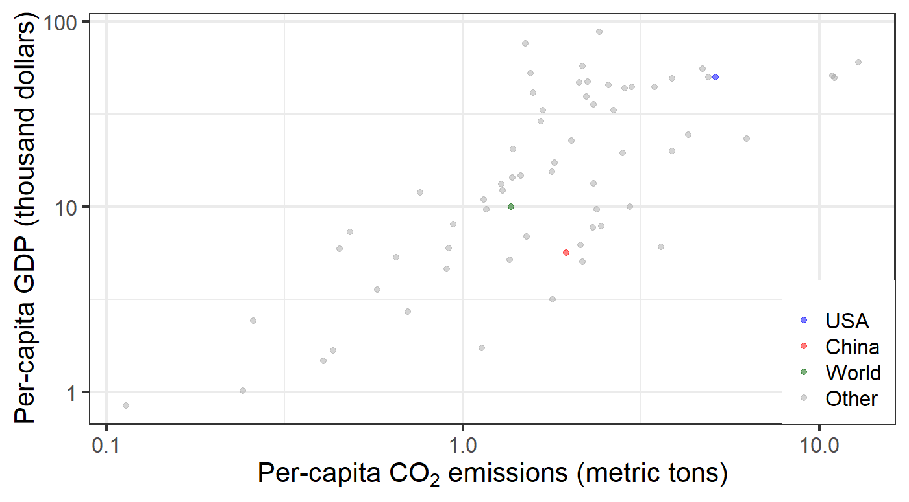

Overview of Climate Science and Policy
EES 3310/5310
Global Climate Change
Jonathan Gilligan
Class #2: Fri. Aug. 24 2018
Organizational Things:
- Next Week
- Preparing for lab on Monday
Aral Sea
Questions from Reading?
Severe Storms and Disasters
Severe Storms and Disasters
- Are severe storms, such as hurricanes and tornadoes becoming more severe because of climate change?
Hurricane Damages
Hurricane Landfalls
All Weather Disasters

Human Impact on Climate System:
Important Concepts:
- What kinds of things can cause the global temperature to change?
- Energy Balance:
- Temperature is steady when \(\text{Heat}_{\text{in}} = \text{Heat}_{\text{out}}\).
- What happens when \(\text{Heat}_{\text{in}} > \text{Heat}_{\text{out}}\)?
- What kinds of things can cause \(\text{Heat}_{\text{in}}\) to change?
- What kinds of things can cause \(\text{Heat}_{\text{out}}\) to change?
Temperature Change
- How much has earth warmed in the last century or so?
- About 1.0°C (1.8°F)
- If CO2 emissions keep rising, how much do scientists expect it to warm in the next century?
- Somewhere around 3–6°C (5–11°F)
- What is the seasonal temperature change in Nashville (winter to summer)? - Around 23°C (42°F) 47°F in January, 89°F in August.
- What is the average daily temperature range in Nashville (night to day)? - Around 11°C (20°F)
- So why do people worry about global warming?
Predictions
- Meteorologists can’t predict whether it will rain three weeks from today with any confidence.
- So how can I trust predictions about the climate 100 years from now?
What Earth’s History
Tells Us
800,000 years of CO2

800,000 years of CO2 and Temperature

Using Past Climates to Test Theory
Source: J. Hansen et al., Phil. Trans. Roy. Soc. A 371, 20120394 (2013).
Temperature and Sea-Level
Key Concepts:
Dynamics and Time Scales
Dynamics:
Dynamics:
- Forcing:
- Something that pushes a system out of equilibrium
- The sun gets brighter
- Response:
- How the system responds to the forcing
- The earth gets warmer
- Feedback:
- The response causes a new forcing
Ice-Albedo Feedback
Characteristic Time Scales
| Component | Response Time |
|---|---|
| Atmopshere | Hours to weeks |
| Land surface | Hours to months |
| Ocean surface | Days to months |
| Vegetation | Hours to decades/centuries |
| Sea ice | Weeks to years |
| Mountain glaciers | Decades to centuries |
| Deep ocean | 100–1500 years |
| Ice sheets | centuries–10,000 years |
| Carbon dioxide | 10s–100s of thousands of years |
Outline of climate science
- Earth’s Temperature
- Set by energy balance: \(H_{\text{out}} = H_{\text{in}}\).
- Greenhouse Effect:
- Natural phenomenon (discovered 1827)
- Due mostly to CO2, H2O. (discovered in 1863)
- Greenhouse gases affect \(H_{\text{out}}\)
- Global warming from burning fossil fuels
- Predicted in 1896
- Detailed calculations impossible without computers (1956)
Economy-Energy-Environment
Wealth & Energy Use
Wealth & Emissions

Circular flow: Science, Impacts, Policy
Economics, Policy, Climate
- Why don’t markets manage greenhouse gas emissions well?
- Pollution is an externality
- How does Nordhaus propose to fix this problem?
- Ronald H. Coase (1920–2013):
- Solve externality problems by assigning property rights
- Cap-and-trade: Permits
- Emissions tax: Put price on emissions
- Solve externality problems by assigning property rights
- Ronald H. Coase (1920–2013):
Economics and Vulnerability
- For an economist, what are the big dangers associated with climate change?
- Managed vs. unmanaged, unmanageable resources
Managing Pollution
- Obama’s EPA Clean Power regulations (Aug. 2015):
- Power must plants cut CO2 emissions 32% by 2030.
What would Nordhaus think?
- Hard targets are bad policy. Why?
- Hard targets do not balance the costs and benefits.
What if it’s really expensive to reduce emissions?
- Also, free-rider problem from other countries.
But…
- Obama EPA regulations (Aug. 2016):
- Stricter fuel-efficiency standards for medium- and heavy-duty trucks
- Expected to cut CO2 emissions by more than 1 billion tons per year
- What will Trump Administration do?
- It’s gone back and forth
- Is this another bad regulation?
- Supported by trucking industry
- Expected to save $170 billion a year in fuel costs.
- Why does government need to pass a regulation if cutting pollution would save money?